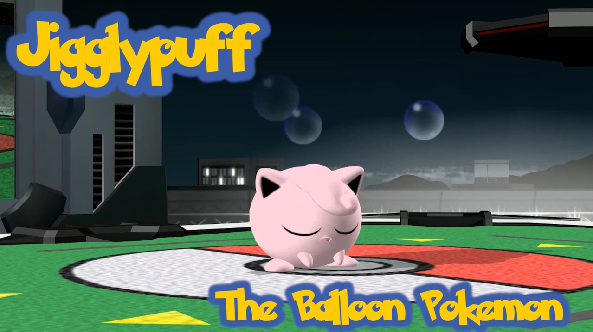

Jigglypuff, est un personnage de la série de jeu Pokemon. Meme si Jigglypuff est un personnage assez faible dans son jeu d'origine, dans SSBM, Jigglypuff est un personnage tres consistent et excelle en environnement competitif. Utilisé par Juan "Hungrybox" debiedma, un des joueur les plus dominant de tous les temps, jigglypuff a plus que prouvé sa place au sommet de SSBM.

Jigglypuff est un personnages tres défensif et opportuniste, possédant l'attaque la plus dévastatrice de SSBM, Repos. Cette attaque tue en un seul coup, cela fait donc en sorte que jigglypuff joue patientement en attendant l'opportunité pour pouvoir utilisé ce coup dévastateur. Cette maniere de jouer fait en sorte que la perception du personnage est mauvaise car les fans de SSBM préferent en majorité les personnages plus rapide et explosif.